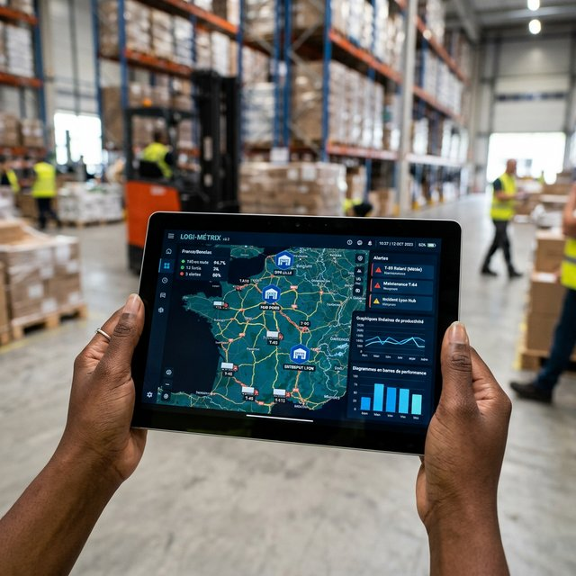

Fluidifier les chaînes d'approvisionnement africaines
Le monde trépidant de la complexe et constante logistique du continent, tout comme l'univers très lié à lui du colossal transport physique des denses biens, implique obligatoirement par toute définition basique ou de haute performance, le plus fort niveau nécessaire hautement crucial de toute la visibilité d'ensemble continue sans faille et une extrême minutieuse coordination sans aucun équivoque à chaque étape précise charnière du grand réseau d'acheminement, d'entreposage temporaire et d'ultime livraisons. MDS accompagne la modernité impressionnante de tous les impressionnants et multiples défis ardus inhérents aux flottes de routiers avec la géolocalisation ou au maritime afin que l'ensemble entier fluide du maillon ne comporte absolument jamais de failles.

Localisation temps réel, historique des trajets, alertes de sortie de zone, comportement conducteur et maintenance.
Les clients suivent leurs colis en temps réel, notifications automatiques et preuves de livraison.
Itinéraires optimaux, capacité véhicules, fenêtres de livraison, trafic et minimisation des coûts carburant.
Inventaire temps réel, mouvements de stock, localisation entrepôt, alertes minimum et gestion des périmés.
Taux de livraison, délais, coût par livraison, satisfaction client, performance chauffeur par zone.